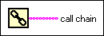

Call Chain Function
Owning Palette: Application Control VIs and Functions
Requires: Base Development System
Returns the chain of callers from the current VI to the top-level VI. Element 0 of the call chain array contains the name of the lowest VI in the call chain. Subsequent elements are callers of the lower VIs in the call chain. The last element of the call chain array is the name of the top-level VI.
If you are using the current VI as a subVI, you can use this function to identify all the VIs that call the subVI.
If a LabVIEW project library owns a VI in the call chain, the function returns the qualified name of the VI, which includes the project library filename.

 Add to the block diagram Add to the block diagram |
 Find on the palette Find on the palette |